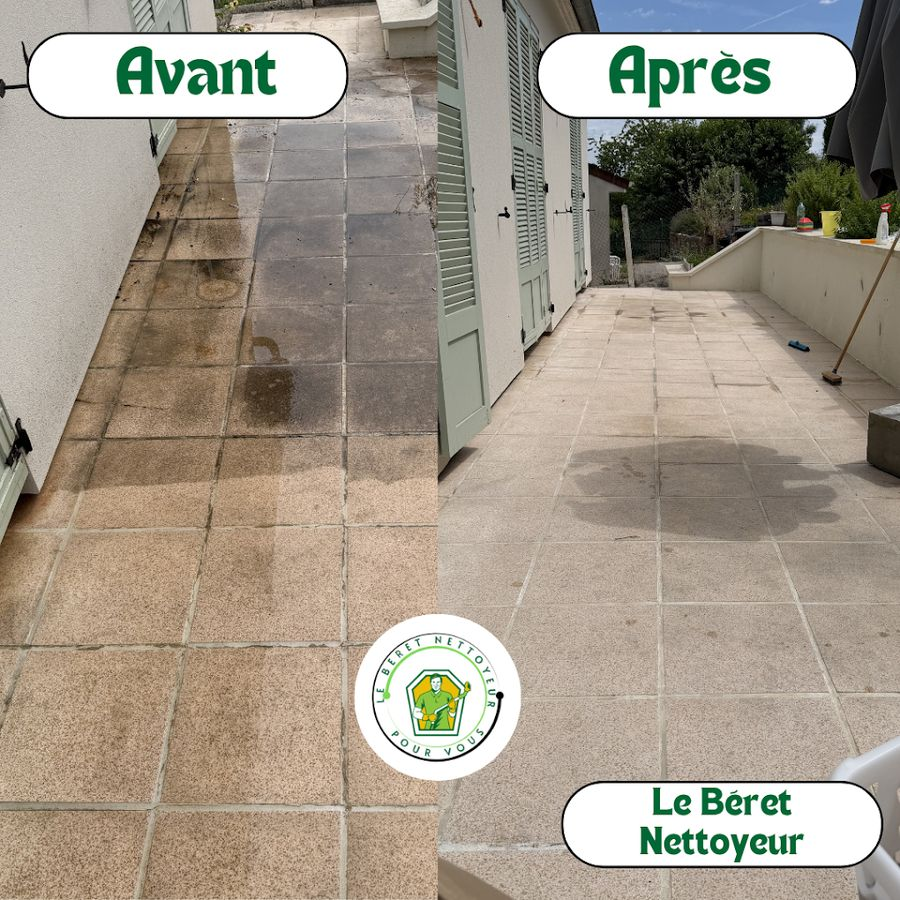

Nettoyage de terrasses, façades et extérieurs à Paris, 92, 95 et 78
Dalles encrassées, lames de bois grisées, crépi verdi par les mousses : nous nettoyons terrasses de restaurant, parvis, façades et abords à Paris et dans les trois départements limitrophes. Chaque support reçoit la pression qui lui convient, pas davantage.
-
Devis gratuit sous 24 h ouvrées
-
Entreprise assurée en responsabilité civile professionnelle
-
Noté 5,0 sur 5 par nos clients sur Google

Pourquoi nous confier votre terrasse ou votre façade
La pression seule ne suffit pas : c’est le traitement qui empêche la mousse de revenir.
La pression réglée selon le support
Une buse trop concentrée sur des dalles béton très encrassées, un jet plat à basse pression et à distance sur du bois ou du crépi : la même machine ne se règle pas de la même façon. Nous testons toujours pression et produit sur une zone peu visible avant de traiter l'ensemble.
Un démoussage qui ne s'arrête pas au visible
La haute pression décolle mousses, lichens et algues, mais laisse les spores dans la porosité du support : la repousse est alors rapide. Nous terminons, sur support sec, par un traitement anti-mousse sans rinçage qui continue d'agir après notre passage.
Vos abords protégés avant le premier jet
Plantes bâchées puis rincées à l'eau claire, menuiseries, prises extérieures et coffres de volets roulants masqués, état des joints vérifié avant de commencer. Sur un balcon en étage, nous maîtrisons l'eau pour éviter le ruissellement chez le voisin du dessous et les coulures en façade.
Terrasses de maison, balcons en étage et murs extérieurs
Nous intervenons sur un parvis d'immeuble comme sur une terrasse de restaurant, une cour intérieure, un muret ou une façade accessible depuis le sol, pour les entreprises comme pour les copropriétés. Entreprise basée à Versailles, assurée en responsabilité civile professionnelle, attestation sur demande.
Un seul interlocuteur, du devis au contrôle final
Lucas se déplace ou étudie les photos que vous envoyez, puis vous recevez un devis gratuit sous 24 h ouvrées : le tarif est établi sur devis personnalisé selon la surface, sans engagement. Nos clients nous notent 5,0/5 sur 17 avis Google.
Les supports que nous traitons
Chaque matériau supporte une pression différente.
Le nettoyage haute pression en conditions réelles
Une façade en pierre reprise chantier ouvert, filmée pendant l’intervention.
Notre méthode de démoussage, étape par étape
Du diagnostic du support au traitement préventif.
Appel, photos et devis gratuit
Vous appelez le 06 99 01 12 57 ou vous envoyez quelques photos à leberetnettoyeur@gmail.com. Nous relevons la surface, le type de support, l'état d'encrassement et les accès (étage, point d'eau, prise de courant), puis vous recevez votre devis sous 24 h ouvrées, sur devis personnalisé selon la surface.
Préparation et protection du chantier
Le jour de l'intervention : dégagement du mobilier et des pots, bâchage des plantes, masquage des menuiseries, prises extérieures et coffres de volets, balayage des feuilles et gravillons. Essai de pression et de produit sur une zone discrète, et repérage des joints fragiles ou des fissures à éviter.
Détergence puis nettoyage adapté au support
Application du produit qui convient — nettoyant alcalin dilué sur béton et carrelage, produit au pH neutre sur pierre calcaire ou travertin (jamais d'acide chlorhydrique), nettoyant bois appliqué dans le sens des fibres, fongicide de façade sur crépi. Temps de pose hors plein soleil pour que le produit n'évapore pas avant d'agir, puis passage haute ou basse pression selon le support, brossage manuel dans les angles, les joints et les rainures.
Rinçage, traitement rémanent et point de contrôle
Rinçage complet, du haut vers le bas sur les surfaces verticales, rinçage des plantes à l'eau claire, ramassage et évacuation des résidus de mousse plutôt que leur dispersion dans les regards. Une fois le support sec, application de l'anti-mousse sans rinçage si le devis le prévoit, puis tour du chantier avec vous avant de remettre le mobilier en place.
Questions fréquentes sur le nettoyage de terrasses et façades
Une question qui n’est pas là ? Appelez-nous au 06 99 01 12 57, du lundi au samedi de 9 h à 19 h.
La haute pression risque-t-elle d'abîmer mon bois ou ma pierre ?
Oui, si elle est mal employée. Une pression mal réglée sur une lame de bois arrache la fibre et fait pelucher la surface ; un jet trop rapproché sur une pierre tendre ou un crépi creuse le grain et fait entrer l'eau dans le support. Sur ces matériaux, nous travaillons en jet plat, à distance, à pression réduite, avec brossage et produit adapté — pH neutre sur la pierre calcaire, jamais d'acide. La haute pression et la buse trop concentrée restent réservées au béton, aux dalles et au carrelage vraiment encrassés, et nous évitons de diriger le jet perpendiculairement aux joints pour ne pas les vider. Un essai sur une zone peu visible précède toujours le traitement complet.
Le démoussage tient-il dans le temps ?
La haute pression enlève ce qui se voit, mais les spores restent logées dans la porosité des dalles, de la pierre ou du crépi : sans traitement complémentaire, la mousse revient. Nous appliquons donc, sur support sec, un anti-mousse sans rinçage qui poursuit son action après notre passage. La durée dépend ensuite surtout de l'exposition : une terrasse orientée nord, à l'ombre d'arbres ou peu ventilée reverdit plus vite qu'une surface dégagée et ensoleillée. Nous vous indiquons au devis le rythme d'entretien réaliste pour votre configuration.
Intervenez-vous sur les terrasses de restaurant et les parvis d'immeubles ?
Oui : terrasses et devantures de restaurants, parvis d'immeubles de bureaux, cours intérieures, garde-corps et abords. Le vrai sujet en milieu urbain est la gestion de l'eau : nous travaillons à faible débit, avec brossage et récupération, pour éviter le ruissellement et les coulures sur la façade. Indiquez-nous l'accès, le point d'eau et la prise de courant, ainsi que les horaires de travaux autorisés par la copropriété ou la mairie.
Comment est calculé le prix d'un nettoyage de terrasse ou de façade ?
Le tarif est établi sur devis personnalisé selon la surface. Entrent également en compte le type de support (le bois et la pierre demandent plus de travail manuel que le béton), le degré d'encrassement, l'accessibilité (étage, dénivelé, point d'eau, prise disponible) et l'ajout ou non d'un traitement anti-mousse rémanent. Le devis est gratuit et sans engagement, et vous le recevez sous 24 h ouvrées après notre visite ou l'envoi de vos photos. Appelez le 06 99 01 12 57 ou écrivez à leberetnettoyeur@gmail.com.
Demandez votre devis gratuit au 06 99 01 12 57
Décrivez-nous votre besoin, ou envoyez-nous simplement des photos par SMS. Tarif sur devis personnalisé selon la surface, réponse sous 24 h ouvrées.